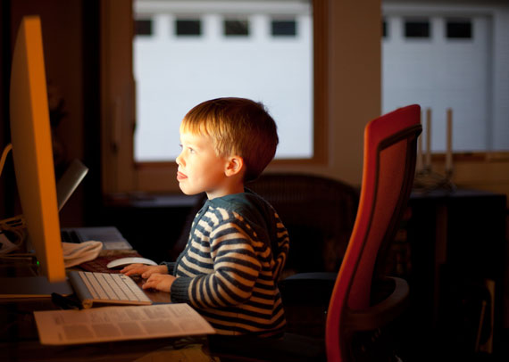

YouTube and its Effects on Children
Ethical Reflection and Recommendations
By Alessandra
There are some ethical issues relating to children’s usage of YouTube, and how this can affect children.
The first ethical issue that comes to mind is the addiction of YouTube starting at an early age. The YouTube algorithm is specifically designed to engage users as much as possible so they can keep watching videos, while YouTube gains more popularity and revenue from active users. The issue with this is that it potentially exploits the child’s unaware concept of addiction and its consequences, for YouTube’s own benefit [of gaining popularity and money]. Because of YouTube’s addictive conditions, it can lead to children being reliant on YouTube as a primary source of entertainment and educational resources. While YouTube can offer both to a high quality, the problem lies where the content becomes less relevant to the initial search over-time due to addiction and reliance on receiving information, educational or not. This can eventually lead to procrastination, which is not the ideal behaviour a child should develop at such a young age.
This leads us to another ethical issue which is that children, from the exposure of popular online personas, could potentially adopt negative behaviour or partake in negative experiences from YouTube content. Linking back to the YouTube algorithm, YouTube promotes content that receives high engagement - whether it is good or bad engagement - from an assortment of users. However, most of the content on YouTube is meant for mature audiences as most users tend to be older and more mature. With that in mind, this means that children can be exposed to YouTube content that may not be appropriate for them. Inappropriate content includes, for example, swearing, sexually explicit behaviour, and dangerous promotion (such as encouraging users to partake in dangerous trends). This is, of course, detrimental to a child’s development as it can cause trauma, inappropriate behaviour, and an ignorant sense of right and wrong if children continue to watch disturbing content.
Figure 1
Child using desktop
Note. From Child using desktop by Lars Plougmann, n.d.. CC-BY-SA
From my point of view, I believe that YouTube, with its flaws and such, can be turned around to provide more of a positive experience for children. I have discussed with others about their stance on YouTube and whether it should be so accessible to children. Many of them have said they would not want their children to be exposed to inappropriate content and thus would have been tempted to restrict almost full access on Youtube. However, when we think about the opportunities YouTube presents for children - such as it being an educational resource, a community for children to engage in, and a possible starting point in careers - YouTube definitely has the capability to do more than the poor reputation many had given. While the ethical issues mentioned above are relevant to this day in 2021, I personally believe that this can be combated in the future if more people are involved with this topic.
This begins with some recommendations to improve the quality of YouTube for children.
A recommendation to try and tackle the problem of addiction is to disable the infinite scroll feature YouTube has when recommending videos. This feature is used by many social media platforms to enable addiction because users get hooked into consuming more information, typically in the form of entertainment. An example of the infinite scroll on YouTube used to hook users in is the “YouTube Shorts”. Here, videos less than 1 minute are fed to the viewer, and the viewer can keep on scrolling down to consume more short videos - and there is no end! Because of this, users are inclined to keep on scrolling for more content, and oftentimes they don’t know how long they have been scrolling for because there is no indication of how far into the page they have gone. By setting a limited amount of videos in a page through disabling the infinite scroll, users would hopefully take the initiative to notice the amount of content they consumed and thus take a break from YouTube.
YouTube sorts the recommended videos based on how much traction it gets. However, not all videos that get traction means that it has positive feedback. This is evident in all media, where negative news tends to go viral, but mostly for the wrong reasons. For example, popular YouTuber Logan Paul had uploaded a controversial video in 2018 where he had filmed his experience in the Aokigahara Forest, Japan, (also known as the “suicide forest”) and captured footage of a recent deceased body (Vox) This disturbing video sparked outrage among users, but since it had gotten high engagement from the audience despite the negative feedback, YouTube’s algorithm incorrectly interpreted this high-engaging video fit for the Trending page. As a result, children were exposed to this, and no doubt were traumatised from this.
This issue of YouTube allowing inappropriate videos to bypass the system has been criticised for many years, with YouTube promising to enforce stricter standards and more moderation. Unfortunately, not much effect has happened since this promise. Arguably, one of the reasons why there is still inappropriate content on YouTube is because YouTube is lenient with banning popular creators, especially because these creators provide the most money for YouTube. However, if YouTube does not suspend or ban these creators who have so much exposure, these disturbing videos can spread to many others, and ultimately, to children. Because of this, I recommend that the YouTube moderation should not hesitate to not only delete the inappropriate video, but to suspend/ban the inappropriate content creator so that it discourages current or future inappropriate content and behaviour.